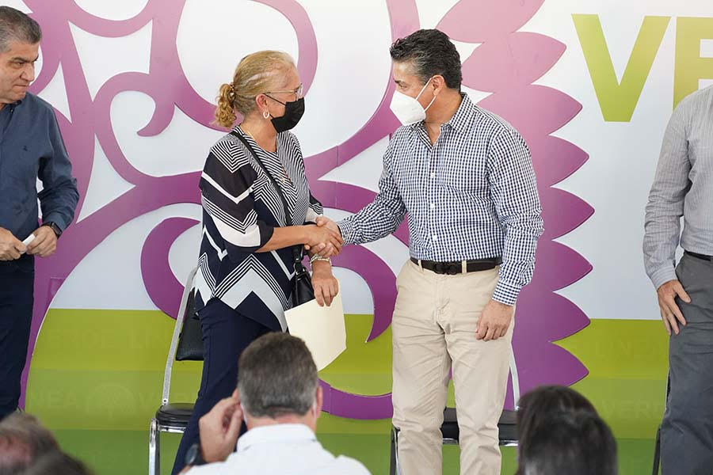

A lo largo del tiempo, las labores desempeñadas por el Poder Judicial han resultado lejanas o incluso desconocidas por la mayoría de la población; esto al ser el poder que tiene la responsabilidad de impartir justicia y generar equilibrios en la sociedad, sin participar de manera directa en la vida política del país, pero no por ello sin responsabilidad pública ante la ciudadanía.
Porque la impartición de justicia, tarea primordial que tenemos encomendada, es trascendental para el desarrollo de la sociedad, ya que impacta directamente en las cuestiones de más valor en las personas: su libertad, su familia, sus bienes patrimoniales y sus relaciones con los demás. La justicia representa entonces un eslabón fundamental de los poderes públicos.
En ese sentido, para el Poder Judicial del Estado de Coahuila de Zaragoza es prioridad el establecimiento permanente de un canal de comunicación efectiva y directa con las y los ciudadanos, que nos permita tener un estrecho acercamiento con ellos y que esto derive en el aumento de la confianza depositada en el sistema de justicia local.
La sociedad debe tener un vínculo más cercano con los impartidores de justicia y que éste no solo sea a través de los abogados litigantes que atienden sus asuntos ante nuestros tribunales, sino que las partes involucradas en cada caso, conozcan de cerca a quienes integran el Poder Judicial, qué servicios ofrecemos, cuáles son los criterios de las y los juzgadores, así como los diversos mecanismos con los que se cuenta para garantizar el acceso a la justicia.
Para lograrlo de manera satisfactoria, desde 2019 hemos trabajado incansablemente en la transformación del Poder Judicial a fin de consolidar un modelo de justicia eficiente, innovadora, profesional, transparente y abierta; pero sobre todo que se trate de un modelo de justicia centrado en la persona como sujeto de derechos. A través de este documento se hace una reseña breve pero significativa, sobre los avances que se dieron durante el 2021 en todos y cada uno de los espacios del Poder Judicial del Estado. Se trata de resultados de una ruta establecida de trabajo colaborativo entre quienes laboramos al interior de este poder con la finalidad de garantizar a las personas el acceso oportuno a la justicia en situaciones que requieren de nuestra intervención y en pro de la sociedad.
Es fundamental para todos nosotros rendir cuentas de nuestras labores, para que conozcan la manera en la que hacemos más con menos y conforme al mayor aprovechamiento de los recursos destinados al Poder Judicial.
El 2021 representó un año lleno de desafíos para quienes colaboramos en este poder público. Aún con los retos que nos plantea la pandemia por el COVID-19, pero con una ruta clara para afrontarlos sin menoscabo de la impartición de justicia, fuimos más allá al transformar de forma y fondo la prestación de servicios en nuestra institución. Durante este año pudimos reforzar el uso de herramientas tecnológicas que fortalecieron el tránsito hacia la justicia digital.
Como parte de las acciones encaminadas a colocarnos como un Poder Judicial cercano, mencionamos la operación del programa Justicia Itinerante encabezado por el Instituto Estatal de Defensoría Pública con el propósito de brindar asesorías jurídicas gratuitas a todas las personas en situación de vulnerabilidad, en colonias lejanas, ejidos o centros comunitarios, para que cuenten con las herramientas necesarias en caso de requerir la asistencia ante juzgados y tribunales.
Otra más de las labores que representan un avance significativo en un Poder Judicial que diseña políticas en respuesta a problemas sociales como lo es el acceso a la justicia para las mujeres, es el inicio de operaciones de los Juzgados Especializados en Violencia Familiar contra la Mujer. Estos órganos jurisdiccionales especializados cuentan con competencia mixta en las materias penal y familiar, para que las mujeres que sean víctimas de violencia no tengan que acudir ante dos instancias distintas a reclamar la protección de sus derechos, evitando en todo momento la revictimización de las mismas. Los juzgados son ya referente a nivel nacional de acceso a la justicia para las mujeres.
En concordancia con lo antes señalado, impulsamos también la difusión oportuna sobre el uso de los medios alternos de solución de controversias, toda vez que estos representan en la actualidad la manera más rápida y sencilla que tienen las personas para solucionar satisfactoriamente las problemáticas que viven. En lugar de acudir a un juzgado en donde hay una gran cantidad de asuntos más, en donde se requieren los servicios de un abogado y en donde posiblemente se tarden meses e incluso años en que el juzgador emita una sentencia al respecto, podemos optar por llegar con la otra parte a un acuerdo, a través del diálogo, que satisfaga a los dos.
En este mismo sentido, durante el 2021 trabajamos en la difusión de la campaña denominada Ponte Trucha, cuyo propósito es concientizar a la población, a través de diversos medios de comunicación masivos, sobre alternativas para prevenir una afectación en sus derechos. De manera específica, trabajamos en la información concerniente al llenado correcto de pagarés, ya que contamos con el dato de que el 90 por ciento de los asuntos atendidos por los juzgados de Primera Instancia en materia mercantil en nuestro estado se trata sobre este asunto. Así, damos a conocer a la sociedad la manera en la que se puede evitar un litigio que será desgastante y que posiblemente impacte de manera negativa en su economía.
Aunado a lo anterior, el Poder Judicial del Estado de Coahuila refrendó su compromiso con la ciudadanía al continuar con acciones encaminadas al mejoramiento de los espacios públicos en donde ofrecemos nuestros servicios. Es de suma importancia el contar con la infraestructura adecuada y moderna que nos permita atender de manera decorosa a las y los usuarios del sistema de justicia, y al mismo tiempo, dotamos de material y mobiliario en óptimas condiciones para que quienes laboran al interior de este poder, lo hagan con las mayores facilidades. A fin de fortalecer aún más el acercamiento del Poder Judicial con las y los ciudadanos, este año gracias a la colaboración que mantenemos con el Poder Ejecutivo del Estado, comenzamos operaciones en el Centro de Justicia de Ciudad Acuña y se inauguró el de la Región Carbonífera. Estos edificios albergan juzgados y otros órganos no jurisdiccionales y administrativos, en los cuales damos atención oportuna a las personas que viven en estas regiones del estado. Estos nuevos espacios son reflejo físico del Modelo de Justicia de Coahuila centrado en un servicio eficiente y moderno. Por ello, mantenemos el compromiso de continuar con inversiones importantes en este rubro, tal es el caso de la construcción de los tribunales laborales que operarán próximamente en los Distritos Judiciales de Monclova y Río Grande.
Continuamos con el uso racional de todos los recursos destinados al mejoramiento de los órganos jurisdiccionales, no jurisdiccionales y administrativos con mayor y mejor equipamiento, con restauraciones en la infraestructura de nuestras instalaciones.
Además, bajo el esquema de justicia eficiente, continuamos con el trabajo de la Presidencia del Tribunal Superior de Justicia en todas aquellas actividades que lo requieren, tales como las participaciones en la Mesa de Coordinación para la Construcción de la Paz y en el Sistema Estatal Anticorrupción, entre muchas otras.
Mantuvimos el orden al interior de nuestros órganos a través de las labores de vigilancia y disciplina ejercidas por el Consejo de la Judicatura, mediante procedimientos transparentes y en apego a los derechos de las personas. También, en este mismo rubro, la Visitaduría General Judicial generó un nuevo reglamento y modelo de supervisión que garantiza la vigilancia permanente de los órganos jurisdiccionales y no jurisdiccionales.
Los servicios directos a la ciudadanía como son los procedimientos de mediación y conciliación realizados por el personal del Centro de Medios Alternos de Solución de Controversias, fortalecen el uso de la justicia alternativa para la resolución de los conflictos y aligeran la carga de trabajo en los juzgados; el trabajo desarrollado por las psicólogas y trabajadoras sociales del Centro de Evaluación Psicosocial en la emisión oportuna de dictámenes de apoyo para los juzgadores, a fin de coadyuvar de manera significativa en la labor jurisdiccional; los servicios otorgados por quienes integran el Instituto Estatal de Defensoría Pública, a fin de atender de manera gratuita a todas las personas en situación de vulnerabilidad que requieren la representación legal y eficiente ante los órganos jurisdiccionales en materias familiar, penal, mercantil y civil.
No dejamos pasar la importancia de la vinculación del Poder Judicial del Estado de Coahuila de Zaragoza con otras instancias de los diversos órdenes de gobierno. Esto nos permite estrechar lazos de colaboración interinstitucional a favor de la ciudadanía y facilita el desarrollo de metas en común. En ese sentido, este año participamos de manera activa en la Comisión Nacional de Tribunales Superiores de los Estados Unidos Mexicanos (CONATRIB), intercambiamos experiencias enriquecedoras para quienes impartimos justicia y recibimos en la ciudad de Saltillo a diversos integrantes de esta Comisión dentro de la Tercera Asamblea Plenaria de 2021.
También, damos cuenta de las labores realizadas por las y los magistrados del Pleno del Tribunal Superior de Justicia y de las Salas Colegiadas, en la conformación de las comisiones que en diversas materias y temas se han instaurado. Cada una de ellas hizo lo propio durante el 2021 en cuanto al seguimiento de los tópicos correspondientes. Dentro de este rubro, podemos mencionar que como mecanismo para estrechar la cercanía con las y los ciudadanos, trabajamos con empeño para lograr la meta trazada el año pasado en cuanto a la publicación y difusión de criterios jurisdiccionales a través de tesis y jurisprudencias, de las cuales algunas ya se encuentran al día de hoy en el portal oficial del Poder Judicial para su debida consulta por parte de jueces, personal jurisdiccional, abogados litigantes y público en general.
En el presente documento presentamos también los resultados estadísticos que arrojó durante este año la labor al interior de los juzgados de Primera Instancia en cada una de las materias, así como las Salas Colegiadas, Tribunales Distritales y el Tribunal de Conciliación y Arbitraje, seguido por las actividades desempeñadas por el Archivo Judicial General, quienes son los encargados del resguardo y clasificación de todos los expedientes que llegan a los juzgados. Damos cuenta también del uso y manejo de los recursos financieros pertenecientes a este Poder Judicial durante el ejercicio anual, así como la información correspondiente al presupuesto basado en resultados.
Por otra parte, este 2021 cristalizamos nuestro objetivo de contar con una justicia profesional a través de diversas actividades desarrolladas por nuestros órganos. En un primer momento, se mencionan las labores realizadas por el Instituto de Especialización Judicial, desde donde avanzamos en materia de capacitación y profesionalización de todos los operadores del sistema de justicia, tanto al interior como al exterior de este poder. Lo mismo sucedió con instancias como la Coordinación Académica y de Servicio Civil de Carrera del Instituto Estatal de Defensoría Pública, el Centro de Medios Alternos de Solución de Controversias, la Unidad de Derechos Humanos e Igualdad de Género, quienes este año ofrecieron diversas capacitaciones para la profesionalización de las personas.
Además, la Unidad de Derechos Humanos e Igualdad de Género, realizó este año numerosas actividades a favor de la promoción de los derechos humanos de manera transversal e institucional. Se continuó con el diseño e instrumentación de diversos programas y fue pieza clave en la implementación de los Juzgados Especializados en Violencia Familiar contra la Mujer. También participó de manera directa en el desarrollo de políticas públicas a favor del acceso de las mujeres a una vida libre de violencia, en conjunto con otras instancias como el Instituto Coahuilense de las Mujeres, el Centro de Justicia y Empoderamiento de las Mujeres, las Unidades de Derechos Humanos e Igualdad de Género de otros poderes judiciales locales, el Instituto Nacional de las Mujeres (INMUJERES), el Banco Nacional de Datos e Información sobre Casos de Violencia contra las Mujeres (BANAVIM), la Suprema Corte de Justicia, entre otras. Refrendamos el compromiso de ser un Poder Judicial con cero tolerancia a la violencia contra las mujeres y donde propiciamos la igualdad de oportunidades, así como el respeto a todos los derechos humanos.
Asimismo, trabajamos en la consolidación de la justicia abierta y transparente por medio de estrategias que derivaron en la transmisión permanente de todas las sesiones desarrolladas por el Pleno y las Salas Colegiadas del Tribunal Superior de Justicia, a fin de dar a conocer de manera pública y directa todos los acuerdos de las y los Magistrados tomados en ellas. Cabe mencionar que todo se encuentra disponible en la página oficial del Poder Judicial para su consulta.
En este rubro, mantuvimos también la celebración de audiencias en materia penal a través de medios digitales, situación que nos permitió garantizar el acceso a la justicia con una mayor eficiencia garantizando la protección a la salud.
Pudimos dar continuidad en la atención directa a la ciudadanía a través de la línea de WhatsApp, la cual permite que las personas reciban información referente a los servicios del Poder Judicial de manera rápida y sencilla; y estrechamos también el diálogo efectivo con barras y foros de abogados en todos los Distritos Judiciales, a fin de escuchar sus peticiones o propuestas de mejora en el sistema judicial.
Mantuvimos el contacto directo con el órgano ciudadano denominado Observatorio Judicial, cuyos integrantes pertenecen a los sectores empresarial, social y universitario. El Capítulo Regional de la ciudad de Torreón continuó con el trabajo que ha desarrollado desde hace algunos años a favor del mejoramiento en el sistema de justicia, a través de sus valiosas recomendaciones. Es compromiso continuo el mantenernos abiertos al escrutinio público en todas nuestras actuaciones.
Para dar cumplimiento con las obligaciones en materia de transparencia y rendición de cuentas, atendimos en tiempo y forma todas y cada una de las solicitudes de acceso a la información realizadas por las y los ciudadanos, además de mantener en permanente actualización toda la Información Pública de Oficio dentro del apartado que para tales efectos se encuentra en nuestra página de internet.
También realizamos lo propio referente a la difusión de nuestras actividades a través de las redes sociales y de la transmisión de programas de radio en donde cada semana servidoras y servidores públicos dan a conocer las tareas que se desempeñan al interior de nuestros órganos para que la gente se familiarice con ellos.
En cuanto a la oferta de un modelo de justicia innovadora, este año fortalecimos el uso y aprovechamiento de las herramientas tecnológicas que abonan en el mejoramiento del trabajo de quienes colaboramos en el Poder Judicial y de quienes son usuarios de nuestros servicios. Hemos logrado avances en esa ruta al centralizar todas las herramientas de uso externo en la plataforma Poder en Línea, al mismo tiempo se consolidó un mecanismo eficiente de intercambio de información en el interior de la institución llamado Plataforma Web, que facilita el quehacer jurisdiccional, la publicación oportuna de las listas de acuerdos de los órganos jurisdiccionales, la publicación de las versiones públicas de las sentencias emitidas conforme a la normativa vigente en la materia, así como de los edictos. Continuamos del mismo modo con el fortalecimiento del uso del firmado electrónico y de la figura del Juzgado Cero Papel que acarrea numerosos beneficios.
Logramos el mantenimiento a las salas de audiencias en beneficio de la administración de justicia y en el correcto uso de las innovaciones tecnológicas. Así también, continuamos en la proyección de lo que serán los nuevos juzgados laborales en todo el estado, para estar en condiciones óptimas este 2022 que iniciamos esta nueva función.
Todas estas acciones que a continuación podrán conocer, no son más que el resultado del trabajo comprometido por parte de quienes colaboramos en el Poder Judicial en la búsqueda de un sistema de justicia de la más alta calidad que se construye día a día para lograr el anhelo de una sociedad justa, equitativa y respetuosa de los derechos humanos de todas y cada una de las personas que habitan en este estado.